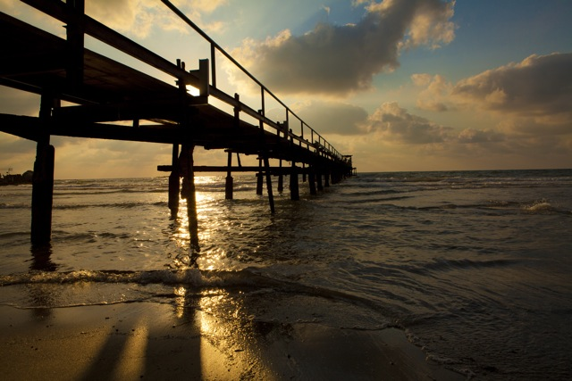
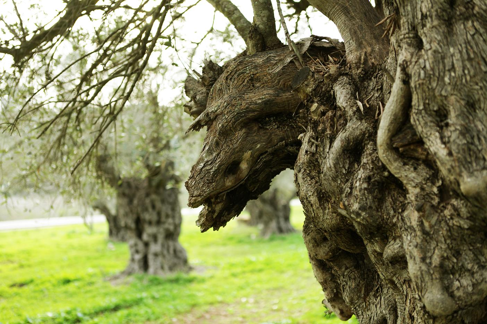
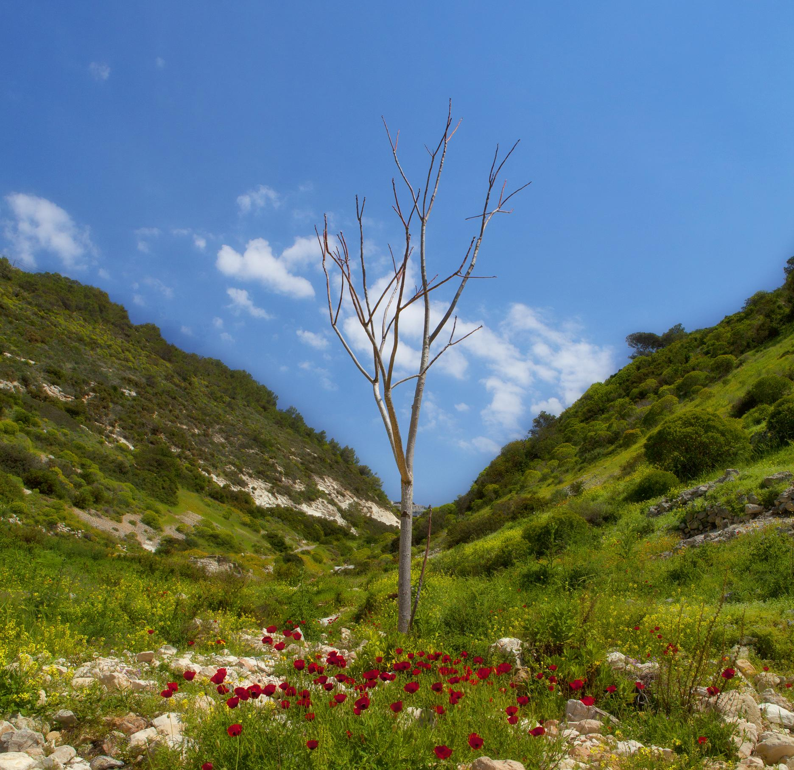

First Impressions of Israel
"My first impression is of an Israel filled with light. Many lights at night: when we began coming in to land, I saw a great many lights. And then, whatever the season, a great deal of light. An Israel filled with light…"
Vadim Birman: television and radio presenter, journalist and reporter, filmmaker, father of four. He made aliyah to Israel from Vladivostok in 2000.



A Skype interview. Vadim Birman: first impressions of Israel
A report on Jerusalem (Vadim Birman).
The key city of human civilisation, both open to the eyes of curious tourists and hidden from them. Can we understand it, and do we have the right not to understand it…
More of his work can be seen here (in Russian).
Author: Ephraim Kalish / Torah-Art
 Bezalel. Under the Shelter of the Most High
Bezalel. Under the Shelter of the Most High Turn Us, and We Shall Be Turned!
Turn Us, and We Shall Be Turned! Bezalel. Grandfather Hur
Bezalel. Grandfather Hur